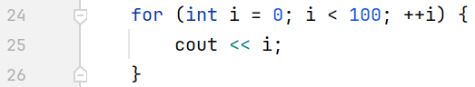

For loops are specifically used when you want to go through a loop and have a good idea of how many iterations you will need. The for loop consists of the following parts. The initialization, the condition, and the changer of the variable. 
Go to the next section Go to the practice problems